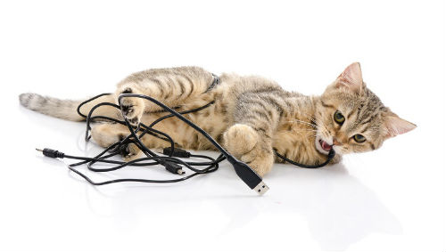

Как отучить кошку грызть?
Как отучить кошку грызть? Совсем непраздный вопрос, потому что полбеды, если кошка грызет мебель, гораздо хуже, если она предпочитает провода. Провод включенной телефонной зарядки может стоить коту жизни. Как спасти и кота, и провода, и мебель – читайте в этой статье.
Почему кошка грызет провода?
К сожалению, любовь кошек ко всему шнурообразному необъяснима. Вероятно, все подобные предметы кошки принимают за змей, на которых часто охотились их далекие предки, а может, и за мышиные хвосты.
Кроме того, котята в принципе склонны все пробовать на зуб, и провода тут не исключение. Кстати, именно котята, особенно в период смены зубов могут погрызть мебель, ботинки, какие-то иные предметы, взрослые кошки, обычно, этого не делают.
Взрослые кошки могут грызть коробки (еще одна необъяснимая страсть) и предметы, которые пахнут привлекательно (едой, кошачьей мятой, валерианой).
Грызть предметы кошка может и от скуки, чтобы чем-то себя занять, помните об этом.
Как отучить кошку грызть?
• Спрячьте все провода\цветы\другие предметы, которые можно спрятать, и не пускайте кошку в комнаты, где заряжаются гаджеты.
• Те провода\предметы, что нельзя спрятать, можно намазать острым соусом или сбрызнуть эфирным маслом цитрусов. Осторожнее, некоторые средства могут вызвать ожог или аллергию. Лучше использовать специальные антигрызины.
• Когда вы выходите из дома – отключайте все электрические приборы, и оставляйте кошке игрушки.
• Никогда не играйте с кошкой проводами, но чаще играйте специальными игрушками.
• Купите специальные лакомства или веточки для тренировки кошки и очищения зубов от налета.
• Внимательно следите за животным: отгрызенное и проглоченное, может привести к непроходимости кишечника.
Отучить кошку от чего-либо довольно сложно, куда проще организовать ее жизнь так, чтобы грызть неположенное было нечего и некогда.